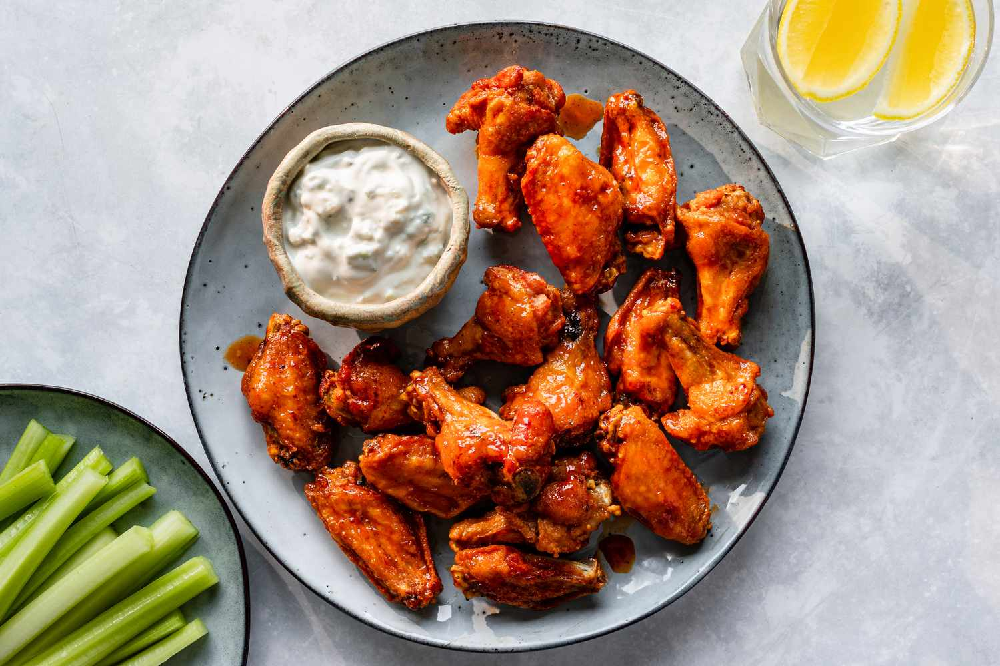

Buffalo Chicken Wings
- by Hreetik Arora

Description
This recipe is a modified, simpler version of the classic Buffalo Chicken Wings. Hope you like it!
Ingredients:
- Chicken Wings(preferably with skin)
- Buttermilk
- Seasonings(Salt and Pepper)
- Paprika
- Garlic(or Galic Powder)
- Butter
- Any Hot Sauce
Steps:
- Cut your Chicken Wings into 2 winglets(unless you bought them like that)
- Make a few slashes into your chicken wings using a sharp knife
- Take your buttermilk, and add to it seasonings and paprika. Add a bit more than you think is appropriate for the quantity of chicken.
- Add your slashed chicken winglets to this buttermilk, and keep marinate for atleast 20 mins (or overnight in your fridge)
- Pre heat your airfryer. Take the chicken winglets out of the buttermilk and dry them using a cloth/tissues (make sure no paper is stuck is on them)
- Mince your garlic and mix it with any vegetable oil. Don't use butter as it will burn before the chicken is done cooking.
- Coat this garlic-oil on your winglets in a bowl, and pop them inside your hot airFryer.
Keep the airFryer at 170degree Celcius (340F) for 12 minutes. Check every 2 minutes after 8 minutues and adjust accordingly.
- Heat up a pan on medium-low heat and melt your butter in it.
- After your butter is melted and starts to bubble up, add your hot sauce to it, keep stirring until it starts to bubble, and take it off the heat.
Keep 1:1 butter:hotSauce for best results, and adjust according to your spice preference.
- After the winglets are done cooking, put them into the butter-hotSauce mix, and coat the winglets thoroughly.
- Serve while hot in a bowl/shallow plate. Enjoy!
Enjoy your Buffalo Chicken Wings! Serve them as a Side Dish or as an appetizer.
For the perfect Vegetarian Accompaniment to this dish, try my Samshed Potatoes recipe!